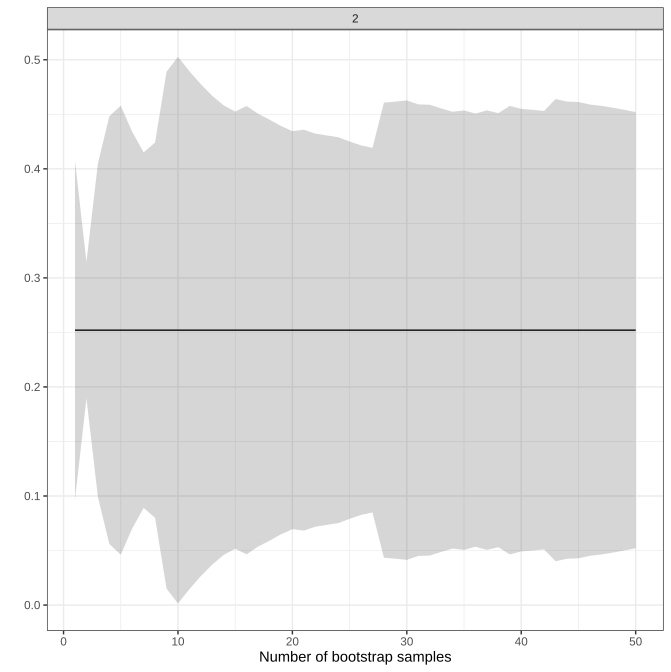

Using rtmle with the cheap subsampling confidence interval
1. About
The R-package rtmle implements a class of targeted minimum loss
estimators for the analysis of longitudinal register data.
In this vignette, we detail how to use cheap subsampling with
the rtmle package to obtain robust inference.
In particular, the researcher may want to supplement their confidence intervals
with robust bootstrap confidence intervals if these appear
to be very narrow or wide.
Cheap subsampling has been demonstrated to have
good coverage with few bootstrap data sets, see https://arxiv.org/abs/2501.10289.
Furthermore, we highlight two important features of using cheap subsampling with
rtmle:
- Bootstrap confidence intervals based on the doubly robust LTMLE estimator, which, therefore, make the confidence intervals "doubly robust".
- Stability of the confidence intervals when the estimated propensity scores are close to zero.
2. Cheap subsampling confidence intervals
We consider register data in the following format.
See the document register-tmle-intro.org
for a more complete introduction to rtmle,
but we must first prepare and run run_rtmle
as we would normally do.
library(rtmle)
library(prodlim)
library(riskRegression)
library(data.table)
tau <- 2
set.seed(17)
ld <- simulate_long_data(n = 91,number_visits = 20,beta = list(A_on_Y = -.2,A0_on_Y = -0.3,A0_on_A = 6),register_format = TRUE)
x <- rtmle_init(intervals = tau,name_id = "id",name_outcome = "Y",name_competing = "Dead",name_censoring = "Censored",censored_label = "censored")
x <- add_long_data(x,
outcome_data=ld$outcome_data,
censored_data=ld$censored_data,
competing_data=ld$competing_data,
timevar_data=ld$timevar_data)
x <- add_baseline_data(x,data=ld$baseline_data)
x <- long_to_wide(x,intervals = seq(0,2000,30.45*12))
x <- protocol(x,name = "Always_A",intervention = data.frame("A" = factor("1",levels = c("0","1"))),verbose = FALSE)
x <- protocol(x,name = "Never_A",intervention = data.frame("A" = factor("0",levels = c("0","1"))),verbose = FALSE)
x <- prepare_data(x)
x <- target(x,name = "Outcome_risk",estimator = "tmle",protocols = c("Always_A","Never_A"))
x <- model_formula(x)
# the overall analysis is stored as estimate$Main_analysis
x <- run_rtmle(x,learner = "learn_glmnet",time_horizon = tau,verbose = FALSE)
Missing start_followup_date variable, for now assume 0, which implies that all event times must be given on the time on study scale.
To then obtain the cheap subsampling confidence intervals, we
run the cheap_bootstrap function. The important parameters are the following:
B: The number of bootstrap samples. 25 is a sensible default, but if one wants to minimize Monte Carlo error (e.g., random noise from bootstrapping), one should set it higher.M: Size of the bootstrap samples which by default is 63.2% of the number of rows of data.
Additional options can be found in the documentation for
the cheap_bootstrap function in R.
Later, we discuss how to determine these two important
parameters, but for now we demonstrate how to use the function:
x <- cheap_bootstrap(x,B = 25,M = 0.632*NROW(x$prepared_data))
summary(x)
Target Protocol Time_horizon Bootstrap_standard_error Bootstrap_lower Bootstrap_upper
<fctr> <fctr> <num> <num> <num> <num>
1: Outcome_risk Always_A 2 0.06410298 0.07905442 0.4250836
2: Outcome_risk Never_A 2 0.08177774 0.16828033 0.6097183
3: Outcome_risk Never_A 2 0.09979294 0.11005182 0.1638087
4: Outcome_risk Never_A 2 0.37972663 1.04571203 2.2774380
Target_parameter Estimator Estimate P_value Standard_error Lower Upper
<fctr> <fctr> <num> <num> <num> <num> <num>
1: Risk tmle 0.2520690 1.0000000 0.07550702 0.1040780 0.4000601
2: Risk tmle 0.3889993 1.0000000 0.08318565 0.2259584 0.5520402
3: Risk_difference tmle 0.1369303 0.2222327 0.11218159 -0.0829416 0.3568021
4: Risk_ratio tmle 1.5432253 0.2378117 0.36754267 0.7508902 3.1716278
Estimate (CI_95) Reference
<char> <char>
1: 25.2 [10.4;40.0]
2: 38.9 [22.6;55.2]
3: 13.7 [-8.3;35.7] Always_A
4: 1.5 [0.8;3.2] Always_A
3. When to use cheap subsampling
Because cheap subsampling makes the confidence intervals `doubly robust`, one should, in principle, always use it since cheap subsampling may provide inference when either the propensity score models or outcome regressions are misspecified (but not both), provided that nuisance parameter estimators converge sufficiently fast, such as when one uses parametric models. The influence curve-based confidence interval cannot provide one with this feature. Another feature is confidence intervals which are typically less sensitive to small estimated propensity scores. See for instance below:
library(rtmle)
library(prodlim)
library(riskRegression)
library(data.table)
tau <- 2
set.seed(450)
ld <- simulate_long_data(n = 91,number_visits = 20,beta = list(age_on_A = -0.5, A_on_Y = -.2,A0_on_Y = -0.3,A0_on_A = 6),register_format = TRUE)
x <- rtmle_init(intervals = tau,name_id = "id",name_outcome = "Y",name_competing = "Dead",name_censoring = "Censored",censored_label = "censored")
x <- add_long_data(x,
outcome_data=ld$outcome_data,
censored_data=ld$censored_data,
competing_data=ld$competing_data,
timevar_data=ld$timevar_data)
x <- add_baseline_data(x,data=ld$baseline_data)
x <- long_to_wide(x,intervals = seq(0,2000,30.45*12))
x <- protocol(x,name = "Always_A",intervention = data.frame("A" = factor("1",levels = c("0","1"))),verbose = FALSE)
x <- protocol(x,name = "Never_A",intervention = data.frame("A" = factor("0",levels = c("0","1"))),verbose = FALSE)
x <- prepare_data(x)
x <- target(x,name = "Outcome_risk",estimator = "tmle",protocols = c("Always_A","Never_A"))
x <- model_formula(x)
# the overall analysis is stored as estimate$Main_analysis
x<-run_rtmle(x,learner = "learn_glmnet",time_horizon = tau,verbose = FALSE)
summary(x)
:results: Missing startfollowupdate variable, for now assume 0, which implies that all event times must be given on the time on study scale. Target Protocol Targetparameter Timehorizon Estimator Estimate Pvalue <fctr> <fctr> <fctr> <num> <fctr> <num> <num> 1: Outcomerisk AlwaysA Risk 2 tmle 0.36177373 1.0000000 2: Outcomerisk NeverA Risk 2 tmle 0.40579533 1.0000000 3: Outcomerisk NeverA Riskdifference 2 tmle 0.04402159 0.6646738 4: Outcomerisk NeverA Riskratio 2 tmle 1.12168267 0.6613372 Standarderror Lower Upper Estimate (CI95) Reference <num> <num> <num> <char> <char> 1: 0.06538511 0.2336213 0.4899262 36.2 [23.4;49.0] 2: 0.08296455 0.2431878 0.5684029 40.6 [24.3;56.8] 3: 0.10155642 -0.1550253 0.2430685 4.4 [-15.5;24.3] AlwaysA 4: 0.26212831 0.6710363 1.8749688 1.1 [0.7;1.9] AlwaysA :end:x
# the bootstrap results are stored as estimate$Cheap_bootstrap
x <- cheap_bootstrap(x,B = 25,M = 0.632*NROW(x$prepared_data))
summary(x)
Target Protocol Time_horizon Bootstrap_standard_error Bootstrap_lower Bootstrap_upper
<fctr> <fctr> <num> <num> <num> <num>
1: Outcome_risk Always_A 2 0.07596474 0.05211446 0.4520236
2: Outcome_risk Never_A 2 0.07812320 0.18336323 0.5946354
3: Outcome_risk Never_A 2 0.11117424 0.10439701 0.1694635
4: Outcome_risk Never_A 2 0.40282783 1.00676924 2.3655314
Target_parameter Estimator Estimate P_value Standard_error Lower Upper
<fctr> <fctr> <num> <num> <num> <num> <num>
1: Risk tmle 0.2520690 1.0000000 0.07550702 0.1040780 0.4000601
2: Risk tmle 0.3889993 1.0000000 0.08318565 0.2259584 0.5520402
3: Risk_difference tmle 0.1369303 0.2222327 0.11218159 -0.0829416 0.3568021
4: Risk_ratio tmle 1.5432253 0.2378117 0.36754267 0.7508902 3.1716278
Estimate (CI_95) Reference
<char> <char>
1: 25.2 [10.4;40.0]
2: 38.9 [22.6;55.2]
3: 13.7 [-8.3;35.7] Always_A
4: 1.5 [0.8;3.2] Always_A
Running cheap bootstrap gives a narrower confidence interval in this case, indicating perhaps that the estimated standard error was too high.
4. How to use cheap subsampling
These choices should be considered only if you have time to do them as they require more computation time. Otherwise, one should stick with the default choices of \(B\) and \(M\).
4.1. Selection of \(B\)
Consider the example in the section `Cheap subsampling confidence intervals`.
Here, we can inspect the values of the cheap subsampling confidence intervals
using only \(b \leq B\) bootstrap samples in x$estimate$Cheap_bootstrap.
In the following code, we look at the cheap subsampling confidence intervals
only for the treated people:

To find out whether the values have stabilized, we add another 25 bootstrap samples as follows to get a total of 50 bootstrap samples. It looks fairly stable!
4.2. Selection of \(M\)
This question is more difficult to answer in practice. A sensible default is to use \(M = 0.632 n\), where \(n\) is the number of rows in the data. One should make sure that the confidence intervals do not change too much when changing \(M\), for instance along a grid of values, such as \(M \in \{0.5 n, 0.632, 0.75 n, 0.8 n\}\). If they do, one should consider increasing \(B\) which should reduce the Monte Carlo error and help stabilize the confidence intervals.